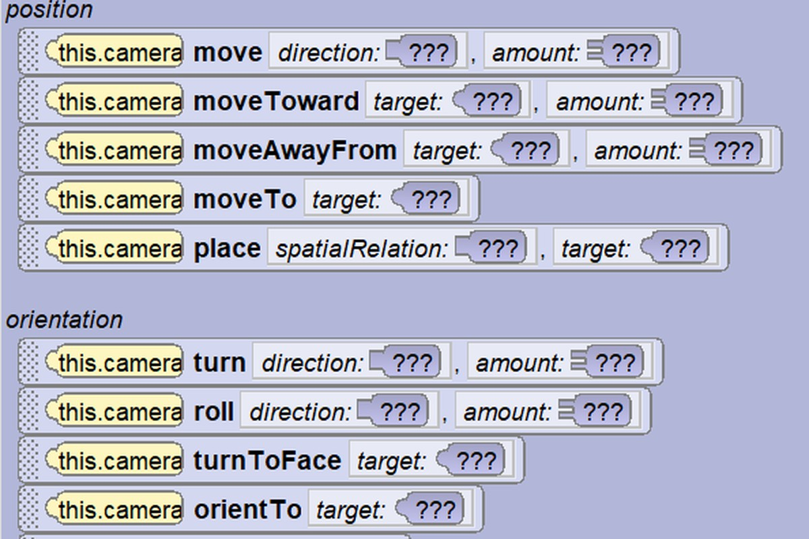
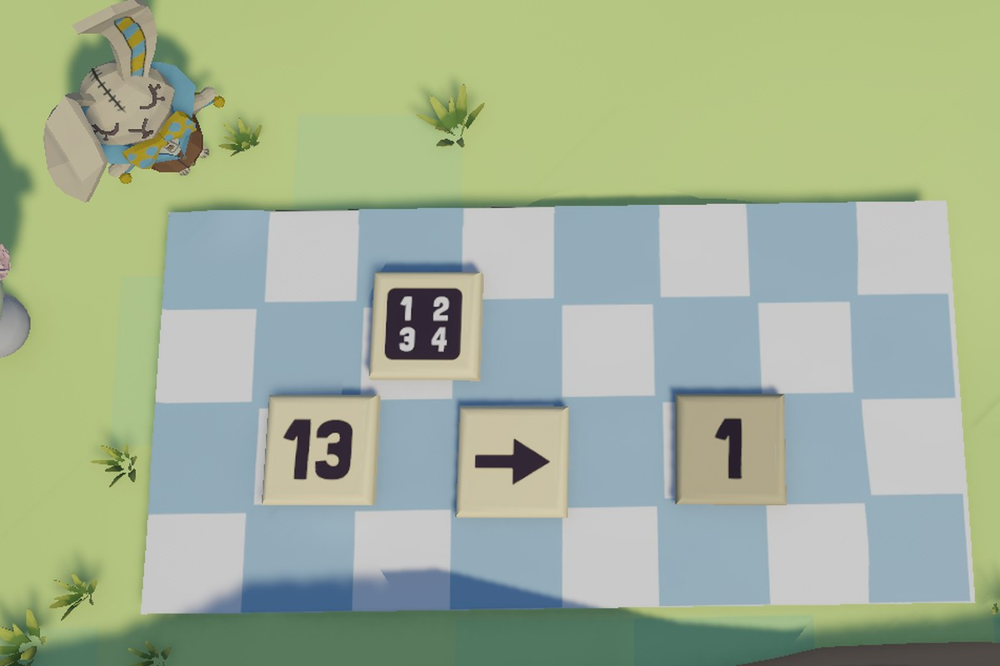
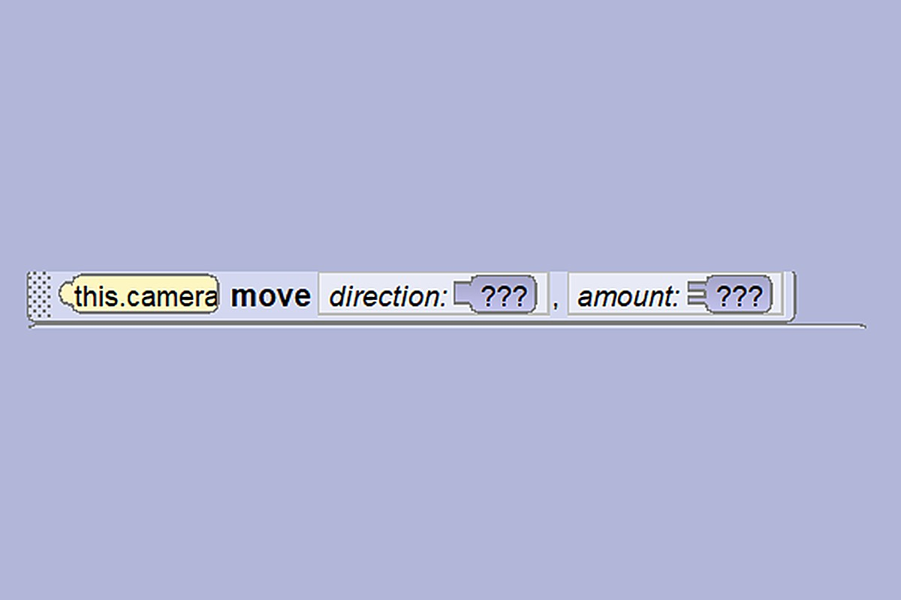
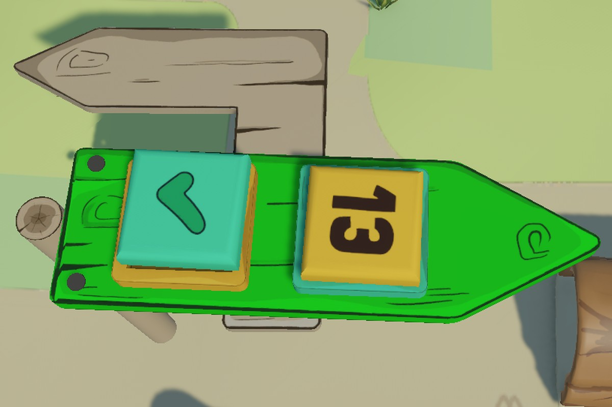
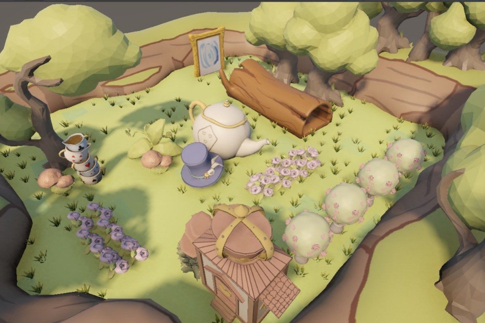
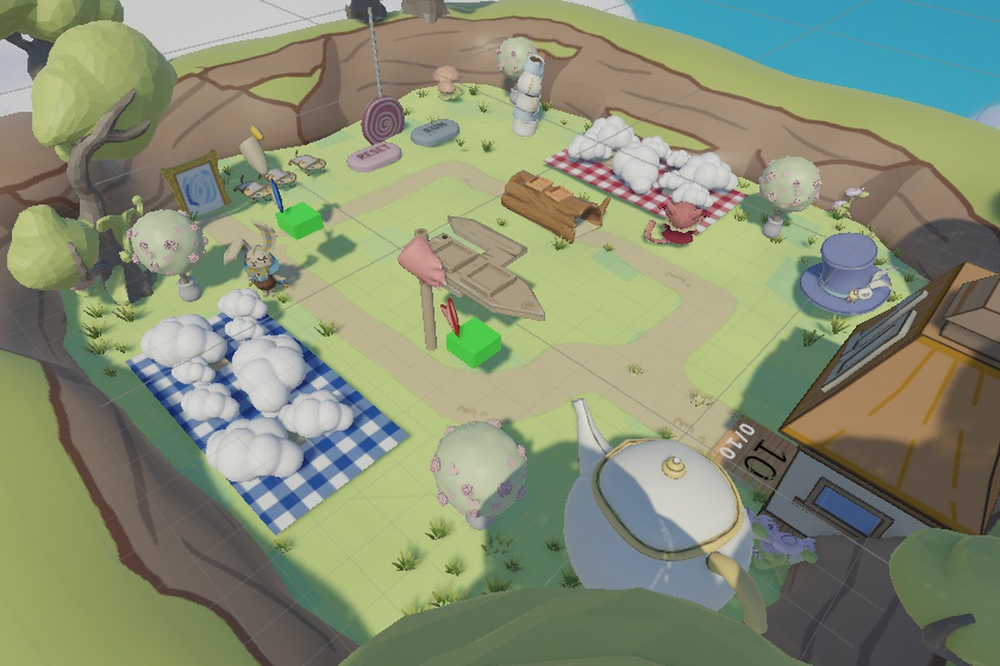

Block menu
visit · 00:00
UX/UI Design & 3D Environment Art
Programming can feel intimidating to young kids, and it usually happens alone at a screen. CMU’s Alice Project asked us to bring Alice to Tilt Five, a tabletop AR system where players sit around one shared board. So we asked: what if a child’s first step into code was something they took together?
My part
Learn to code. Together.
Two players share one AR board, each from their own side — so pointing and talking become part of solving the puzzle.
One idea: the loop
A loop is code that keeps doing what you tell it. That simple rule already felt like a game — and gave the team a concept rich enough to build many levels from.
Interaction flow · placing tiles
Code as objects in the world
Players grab tiles from a picnic blanket and place them on a signpost to build the path, then press run and watch. From Figma prototype to the final game.
Alice 3 · on a screen
it takes two alices · on the table

Block menu

Picnic blanket of tiles

A line of code

A signpost, facing up
Two rules for UI on a table
Tilt Five players stand around a table and look down at it. So every piece of UI followed two rules: live on the table, not on a screen, and read clearly from above, from both sides.
Props
Setting the tone
A storybook Wonderland: teapots, clocks and soft colors, so the game feels like play, not a lesson. Built in 3D with elevation, so it reads well from above.
3D props · teapot, hat & log
Building the pieces
From the teapot and teacups to houses shaped by card suits, the props and buildings share one soft, low-poly look, with simple forms and strong contrast so they read clearly through the glasses.

Before · too many decorations

After · clearer paths and guidance
Playful, but clear
Playtesters got lost among the decorations. We simplified the layout, guided movement with paths, added small effects on interaction and kept the scene rich — but readable.
“I wish we did this in school!”
Players talked to each other constantly — our main metric. Some asked to download it and keep playing at home.
Outcome
3 levels plus a tutorial, a Teacher’s Guide for classrooms, and a free release on Steam — one of the few games built natively for Tilt Five.